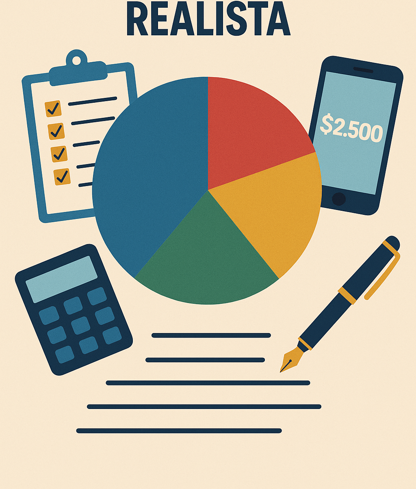

📊 Como Montar um Orçamento Mensal Realista
O segredo para ter controle financeiro é saber exatamente quanto entra e quanto sai. Aprenda a montar um orçamento que funcione de verdade para você.
Introdução
Ter um orçamento mensal é como ter um mapa nas mãos: ele mostra exatamente onde você está e para onde pode ir. Ainda assim, muita gente evita montar um orçamento achando que é complicado demais — ou que vai tirar a liberdade de gastar.
A verdade é o oposto: um bom orçamento não é uma prisão, e sim uma ferramenta de liberdade. Quando você entende para onde seu dinheiro vai, pode fazer escolhas melhores, planejar sonhos e evitar dívidas desnecessárias.
Construindo um Orçamento Realista
Conheça Sua Renda Total
O primeiro passo para qualquer planejamento financeiro é saber exatamente quanto dinheiro você tem disponível por mês. Some todos os seus ganhos fixos (salário, pensão, aposentadoria) e variáveis (freelas, vendas, comissões). É com esse valor que você vai montar o resto do seu orçamento.
Liste Todos os Seus Gastos
Divida seus gastos em duas categorias principais:
- Essenciais: aluguel, contas de luz, água, transporte, alimentação;
- Variáveis ou supérfluos: lazer, delivery, compras, assinaturas, presentes, etc.
Essa etapa exige sinceridade: anote tudo, mesmo os gastos pequenos. Eles costumam ser os maiores vilões do orçamento.
Separe um Valor para Economias
Um orçamento eficiente precisa incluir metas. Uma delas é guardar parte da sua renda. Mesmo que pareça pouco, comece com 5% ou 10% da sua renda mensal. O importante é criar o hábito. Esse valor pode ir para uma reserva de emergência, investimentos ou para alcançar objetivos como viagens ou cursos.
Ajuste para a Realidade
Um erro comum é montar um orçamento "perfeito demais", ignorando imprevistos. Seja realista: inclua margem para despesas inesperadas, revise mês a mês e vá ajustando conforme sua vida muda. Flexibilidade é fundamental para que o orçamento funcione de verdade.
Use Ferramentas a Seu Favor
Existem muitos aplicativos e planilhas que facilitam o controle financeiro. O FinanFácil, por exemplo, oferece uma visão clara dos seus gastos, gráficos simples de entender e integração com cartões e metas. Automatizar parte desse controle torna tudo mais prático — e sustentável.
Evite a Autossabotagem
Não adianta montar o orçamento perfeito e depois ignorá-lo. Para que ele funcione, você precisa se comprometer. Revise semanalmente, acompanhe seus hábitos e, se errar, recomece. A educação financeira é um processo, não um evento.
Adaptando o Orçamento à Sua Realidade
Não existe uma fórmula mágica que funcione para todo mundo. Um bom orçamento mensal deve refletir o seu estilo de vida, suas prioridades e o momento em que você está. Se você está pagando dívidas, por exemplo, pode ser necessário destinar uma fatia maior da renda para isso. Se está focado em guardar dinheiro, pode priorizar a poupança e cortar excessos.
O segredo está na flexibilidade: revise seu orçamento com frequência e faça ajustes conforme as necessidades mudarem. O importante é que ele continue sendo uma ferramenta útil, não uma fonte de frustração. Mantenha seus objetivos em vista e adapte o plano sem perder o foco.
🧠 Psicologia do Consumo: Por Que é Tão Difícil Economizar?
Mesmo sabendo que precisamos controlar os gastos, muitas vezes agimos no impulso. Isso acontece porque nosso cérebro busca recompensas imediatas. Reconhecer esses padrões ajuda a criar estratégias para driblar a tentação. Uma dica simples: evite compras em momentos de estresse ou tédio — são os piores conselheiros financeiros.
💡 Exemplo Prático de Orçamento
Veja abaixo um exemplo simples de como distribuir seus gastos mensais:
| Categoria | Valor Estimado (R$) |
|---|---|
| Moradia (aluguel, luz) | 1.500 |
| Alimentação | 800 |
| Transporte | 300 |
| Lazer | 200 |
| Assinaturas e apps | 100 |
| Reserva mensal | 300 |
| Total | 3.200 |
🧾 O que Fazer Quando o Orçamento Não Fecha?
Se você sempre termina o mês no vermelho, vale seguir esse passo a passo:
- Revise seus gastos variáveis (lazer, delivery, compras por impulso).
- Negocie contas fixas, como internet, telefone e até aluguel.
- Busque renda extra, vendendo algo ou oferecendo serviços.
- Evite parcelamentos longos — eles viram armadilhas para o mês seguinte.
🔁 A Regra 50-30-20: Um Guia Simples de Distribuição de Renda
Uma técnica clássica de orçamento é a Regra 50-30-20:
- 50% para necessidades (moradia, alimentação, transporte);
- 30% para desejos (lazer, compras, entretenimento);
- 20% para economias (reserva de emergência, investimentos).
Mesmo que os percentuais não batam certinho, essa ideia ajuda a equilibrar.
🧩 Personalize seu Estilo de Controle
Você prefere papel, planilha ou app? Não existe jeito certo — o importante é funcionar pra você. Se for mais visual, tente planilhas coloridas. Se for mais prático, use aplicativos com notificações. O importante é que seja um sistema simples de manter no dia a dia.
Erros Comuns ao Montar um Orçamento (e Como Evitar)
Montar um orçamento é um passo essencial para assumir o controle das finanças, mas mesmo com boas intenções, é comum cometer erros que comprometem a eficácia do planejamento. Veja os deslizes mais frequentes — e como evitá-los:
- Subestimar pequenos gastos: um cafezinho por dia, uma assinatura esquecida ou aquele frete "barato" podem parecer inofensivos isoladamente, mas somam valores significativos ao longo do mês. Anote tudo, inclusive os centavos — eles fazem diferença.
- Ignorar despesas sazonais: contas como IPTU, IPVA, matrícula escolar ou presentes de fim de ano costumam ser esquecidas no orçamento mensal. A dica é dividir essas despesas em 12 vezes e guardar esse valor todo mês.
- Não incluir lazer e imprevistos: um orçamento muito rígido é mais difícil de seguir. Reserve um valor para momentos de lazer e outra pequena parte para emergências. Assim, você evita frustrações e dívidas inesperadas.
- Basear-se em valores estimados, não reais: planejar com base em “achismos” é um convite ao erro. Use dados reais do seu extrato bancário ou fatura do cartão. Quanto mais realista, melhor.
- Não revisar o orçamento periodicamente: a vida muda — e seu orçamento também deve mudar. Um aumento, uma nova despesa fixa ou uma mudança de rotina pedem ajustes. Reavalie ao menos uma vez por mês.
Evitar esses erros aumenta as chances de sucesso do seu planejamento. Lembre-se: um orçamento eficaz é aquele que funciona na prática, não só no papel.
Checklist: Seu Orçamento Está no Caminho Certo?
Nem sempre é fácil saber se você está no caminho certo com seu planejamento financeiro. Para te ajudar a avaliar o seu progresso, preparamos um checklist simples. Vá marcando as respostas com sinceridade:
- ✅ Você sabe exatamente quanto entra de dinheiro todo mês? (Salário, rendas extras, benefícios...)
- ✅ Você categoriza seus gastos em essenciais, variáveis e supérfluos?
- ✅ Você tem uma reserva mensal para emergências ou investimentos?
- ✅ Você acompanha seus gastos com frequência (diariamente ou semanalmente)?
- ✅ Você evita usar o cartão de crédito sem planejamento?
- ✅ Você tem metas financeiras definidas (curto, médio e longo prazo)?
- ✅ Você ajusta seu orçamento sempre que há uma mudança significativa na sua vida?
- ✅ Você consegue fechar o mês sem entrar no vermelho?
- ✅ Você se sente mais seguro(a) ao tomar decisões financeiras?
Resultado: Se você respondeu "sim" à maioria dos itens, parabéns! Seu orçamento está saudável e funcionando bem. Caso tenha identificado muitos "não", não se preocupe — o mais importante é estar consciente e disposto a melhorar.
Pequenos ajustes podem gerar grandes mudanças ao longo do tempo. O segredo está na consistência e na clareza dos seus objetivos.
Dicas Extras para Manter a Constância
Montar o orçamento é só o começo. Para que ele funcione de verdade, é preciso manter a constância. Aqui vão algumas dicas práticas:
- Use apps ou planilhas para registrar seus gastos diariamente. Quanto mais simples for registrar, maior a chance de manter o hábito.
- Evite gastos impulsivos, criando uma “regra dos 24h”: se surgir uma vontade de comprar algo que não estava previsto, espere um dia antes de decidir.
- Tenha uma meta clara no mês: pode ser economizar R$ 100, não gastar com delivery ou ficar longe do cartão de crédito. Objetivos mensais dão motivação e direção.
- Recompense-se quando atingir uma meta. Não precisa ser um gasto alto, mas algo simbólico que te motive a continuar no caminho.
Conclusão
Montar um orçamento mensal realista é muito mais do que uma tarefa financeira — é um compromisso com sua qualidade de vida. Quando você sabe exatamente quanto ganha e como gasta, fica mais fácil tomar decisões conscientes, evitar dívidas e, principalmente, construir um caminho sólido rumo aos seus sonhos.
Além disso, um bom orçamento proporciona paz mental. Ele evita aquela sensação constante de insegurança com o dinheiro, te ajuda a enxergar oportunidades de economia, e permite que você reserve recursos para o que realmente importa: lazer, investimentos, imprevistos e projetos futuros.
Dica final: Comece de forma simples, sem pressão. Pode ser no papel, no celular ou no computador. O mais importante é dar o primeiro passo. E se quiser uma ajudinha extra, conte com o FinanFácil para acompanhar seus gastos, categorizar despesas e manter você no controle com mais praticidade e leveza.